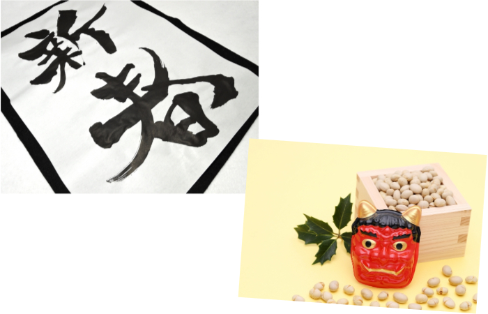

Winter Tradition
"Kakizome" and "Mamemaki"
Kakizome is a traditional event of writing our New Year's goals or wishes in Japanese calligraphy.
Mamemaki is also a tradition for wishing everyone health and happiness. "Mame" means beans, "maki" means scattering away and we throw beans saying "Devils out! Happiness in!" Also, people eat the same numbers of beans as their age.